BUILT YOUNG, DESIGN PHASE
Make it
look good.
Today you choose how your app looks and feels.
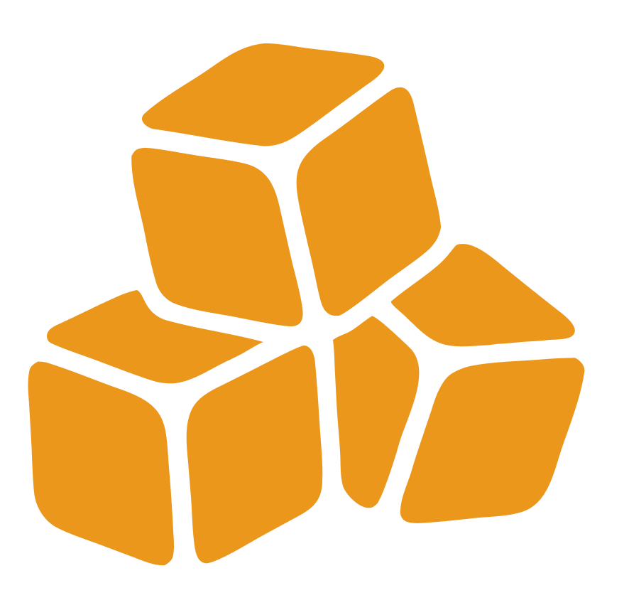
What's art direction?
The look and feel you choose, so every screen feels like the same app.
An empty room
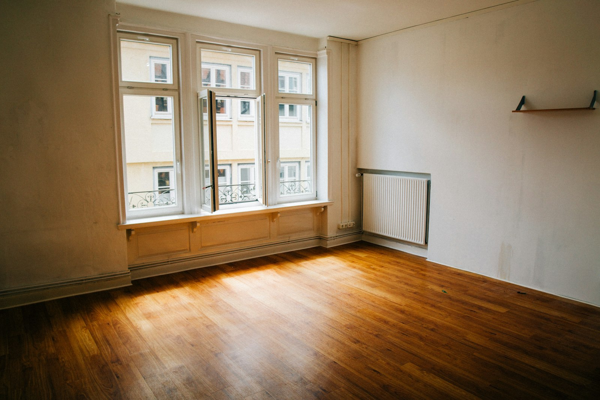
It works, but it doesn't feel like anything.
That's your app in grey wireframes.
Art direction: Space
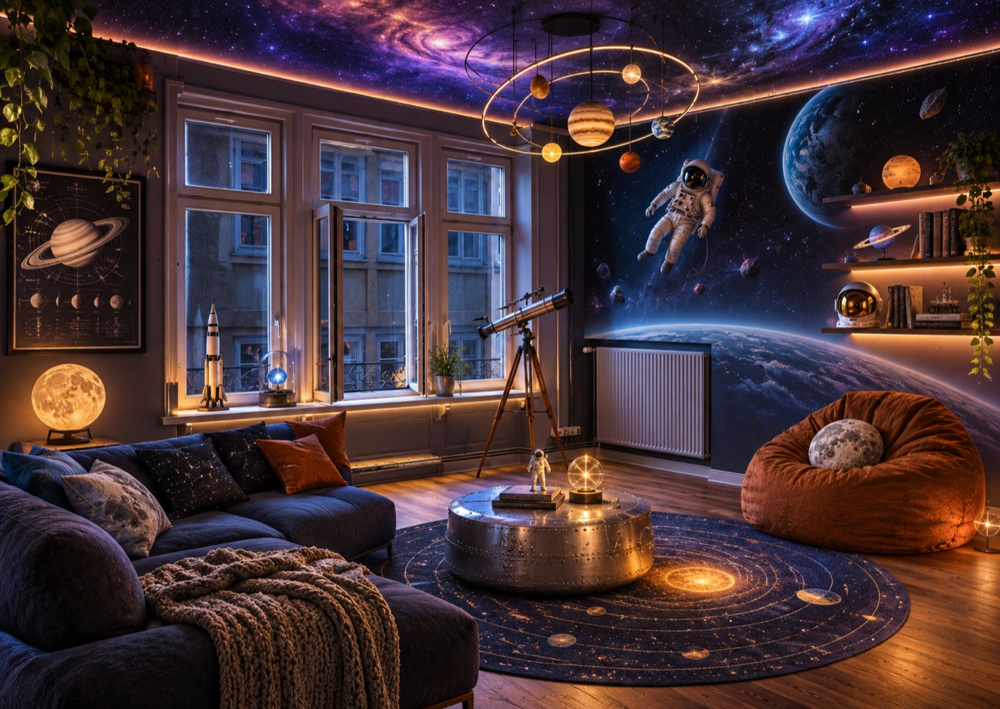
- Galaxy purple and navy
- Warm glowing lights
- Planets and rockets
- Round shapes
Dreamy, adventurous, a bit magical.
Art direction: Nature
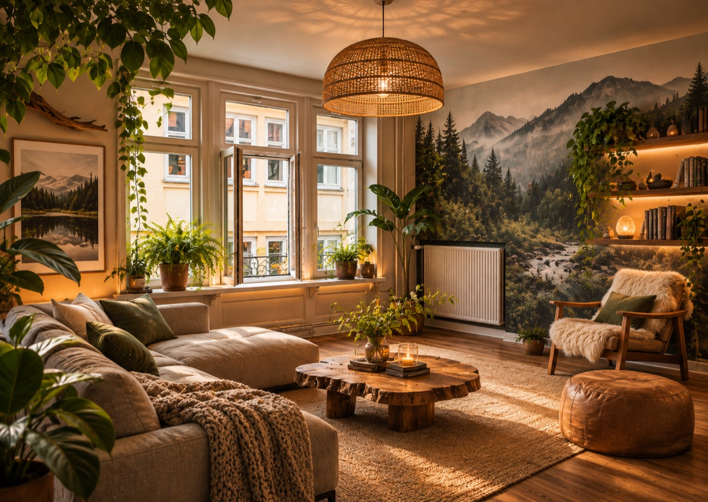
- Leafy greens
- Warm wood
- Misty mountains
- Golden light
Cozy, calm, alive.
Two more directions
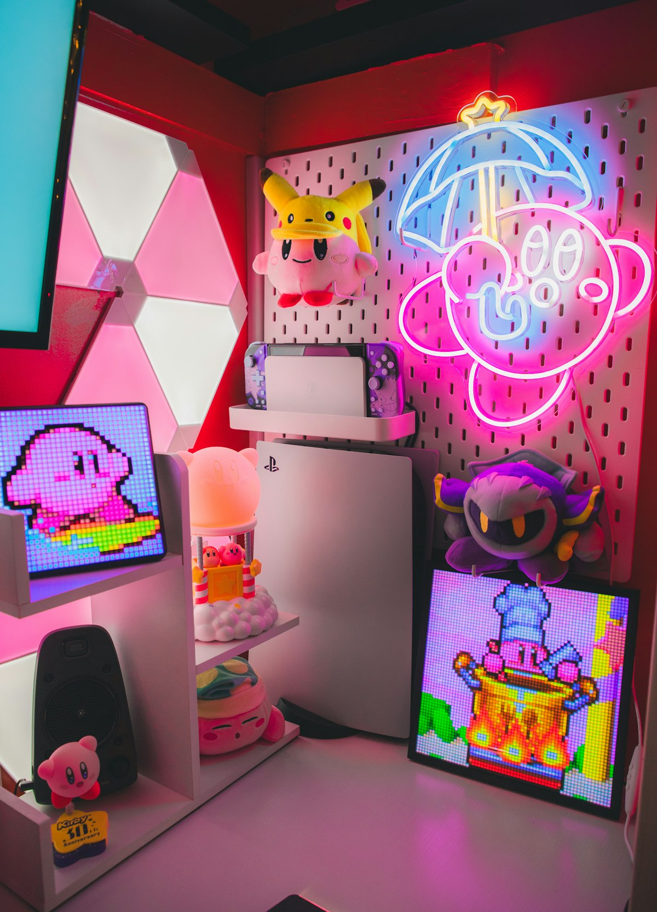
Retro arcade
Neon pink and blue, dark walls, loud and bold.
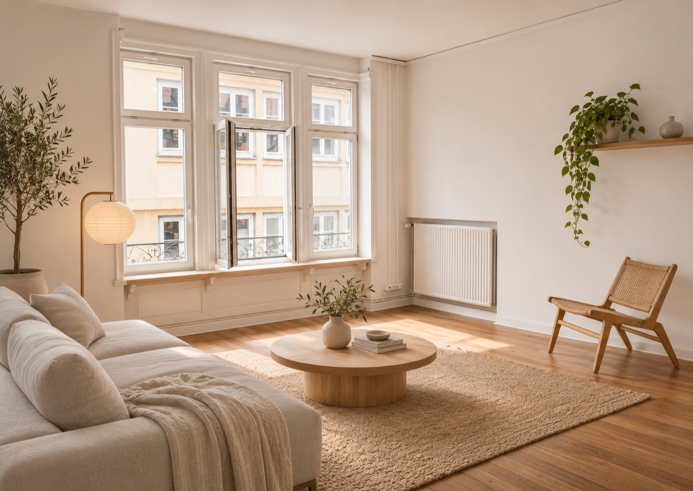
Calm minimal
White walls, light wood, lots of empty space.
Same idea, your app
Same layout. Same buttons. Only the look changes.
Hi, Maya
Hi, Maya
Hi, Maya
Words first, then a mood board
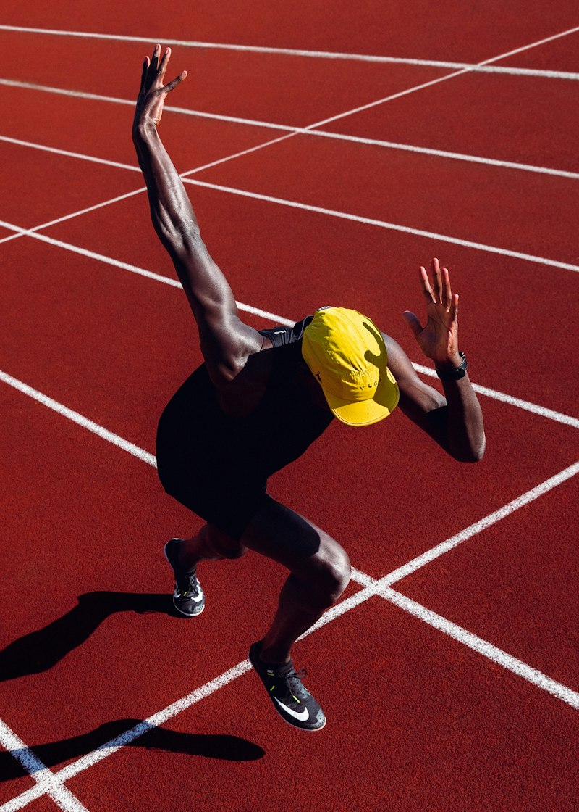
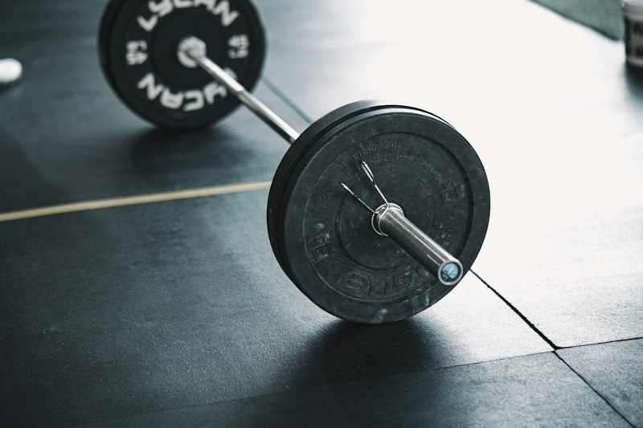
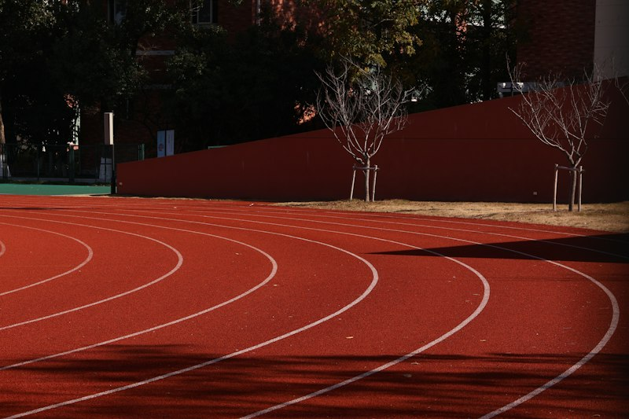
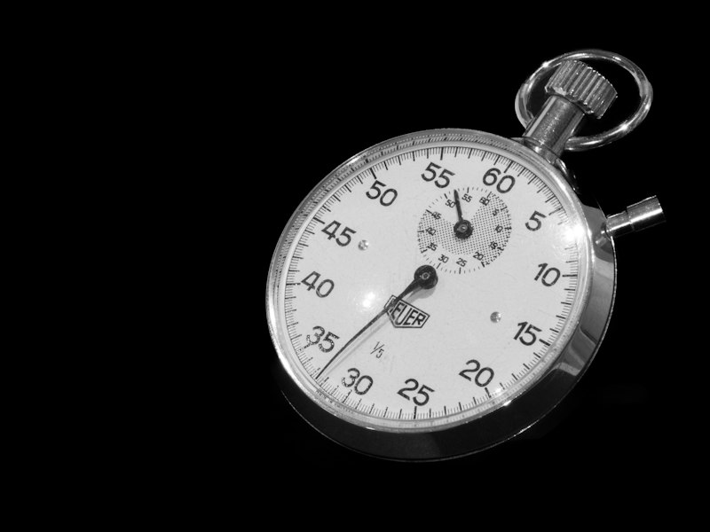
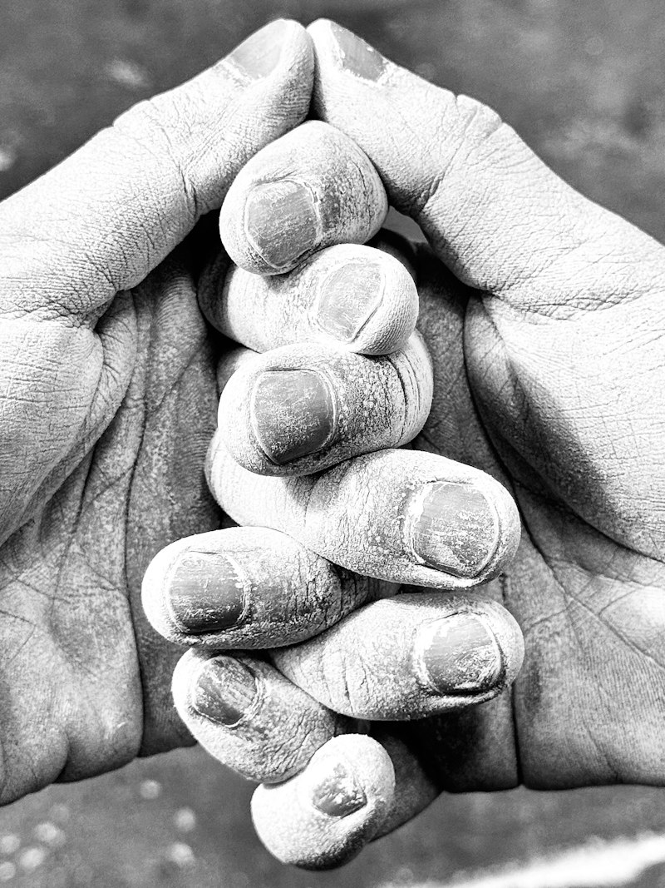
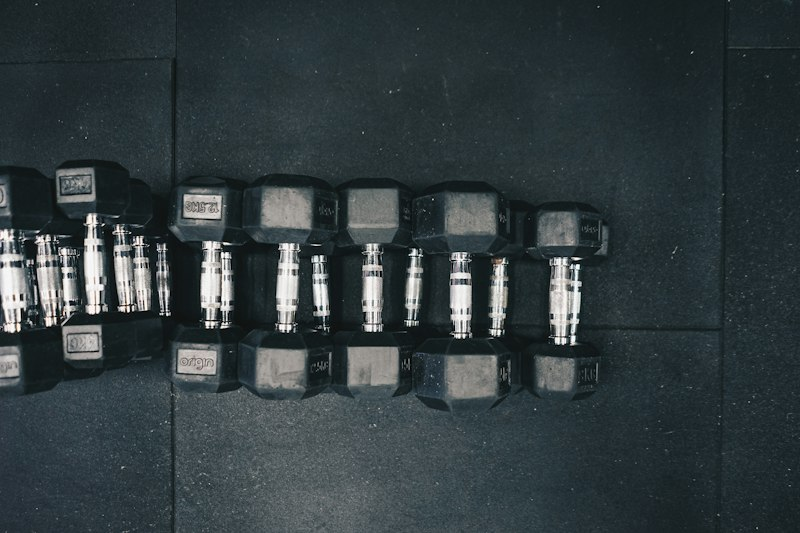
Black#121417
Volt#E3F542
Track red#C2432E
Chalk#EEEEEA
- PinterestMoods, places and colors
- DribbbleApp designs
- MobbinScreens from real apps
- ChatGPTMake images of your words
What's a design system?
A set of rules and reusable parts that make every screen look like the same app.
Real ones: Google's Material Design and Apple's Human Interface Guidelines.
From direction to system
Space is the direction. The paint, the lamp and the bedding are the system.
Colors
Type
Log it.
Barlow Condensed
Body text is Inter, 28 pt.
Spacing
Corners: 6. Tap targets: 44 or more.
Components
Change the main color once, and every button changes.
Now let's make yours
We'll do all four together.
Feeling words
3 to 5 it should feel, and 2 or 3 it shouldn't.
Mood board
Cut it to the images that fit your words.
Run Prompt 6
Compare 2 or 3 directions. Pick one, and say why.
Run Prompt 7
Check contrast. Then put your wireframe and new screen side by side.
Your homework
Due Sunday at 1 PM ET, before Session 4.
Apply your design system
To every screen. Keep the layouts and flows the same.
Design your logo
Run Prompt 8 for 2 or 3 options with your app's name.
Get ready for Session 4
A GitHub account, Claude's plugins, and Xcode if you're on a Mac.